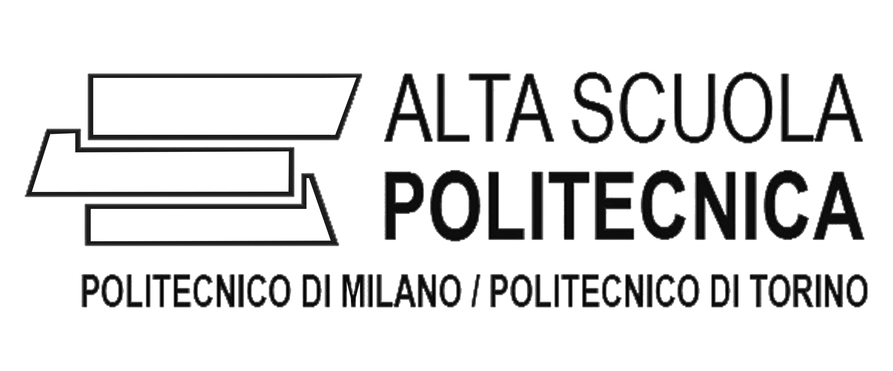

-

09/18 - Today | PhD in Electrical Engineering and Computer Science | KTH, Stockholm (SE)
Thesis: Analysis of Attacks on Controlled Stochastic Systems Supervisor: Prof. Proutiere Alexandre
Courses: Probability and Random Processes, Mathematical Statistics, Theoretical Foundations of Machine Learning, Differential Geometry, Mathematical Methods in Signals, Systems and Control, Algorithms in High Dimensions, Computational Game Theory, Cyber-physical security of Control Systems -

09/14 - 12/16 | MSc in Automation and Control Engineering| Politecnico di Milano, Milan (IT)
Thesis: Adaptive control of multirotor UAVs Supervisor: Prof. Lovera Marco
GPA: 110/110 cum laude, 29.5/30
Courses: Multivariable Control, Adaptive and Optimal Control, Pattern Recognition and Machine Learning, Model and System Identification, Advanced Software Engineering, Mechanical and Electrical Systems -

09/14 - 12/16 | Honours Diploma in Innovation | Politecnico di Milano, Milan (IT)
Multidisciplinary courses and team projects aimed at improving Design, Analytical and Economical skills. Programme restricted to 150 students, selected on the basis of merit, among top 1% students of Politecnico di Milano, Politecnico di Torino. -

09/11 - 07/14 | BSc in Computer Science Engineering | University of Genoa, Genoa (IT)
Thesis: Analysis of Classification Algorithms Supervisor: Prof. Rosasco Lorenzo
GPA: 110/110 cum laude, 29.2/30
Courses: Algorithms and Software Engineering, Computer Architectures, Digital and Analog Electronics, Dynamical Systems and Control, Telecommunications.